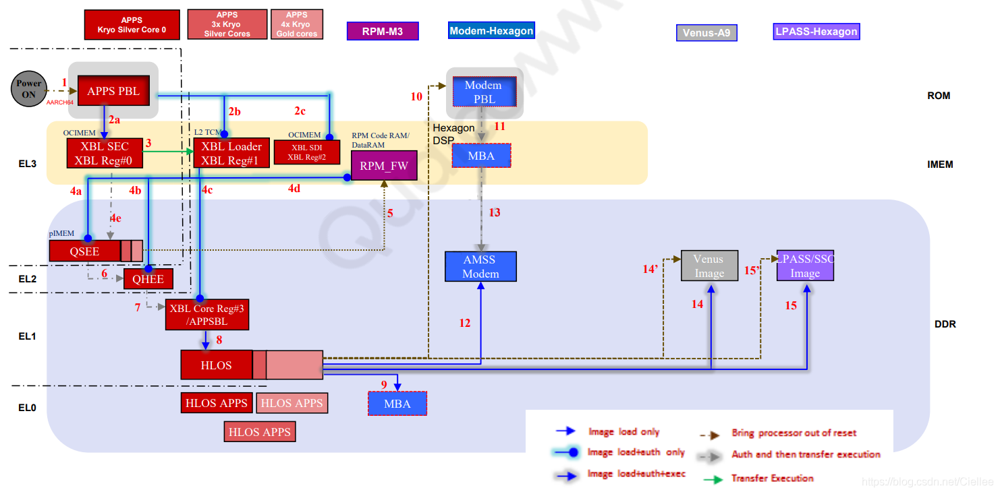

概述
之前学习的lk阶段点亮LCD的流程算是比较经典，但是高通已经推出了很多种基于UEFI方案的启动架构。所以需要对这块比较新的技术进行学习。在学习之前，有必要了解一下高通UEFI启动流程。
refer
打印
Active Platform = /home/wugn/A6650-project/Unpacking_Tool/BOOT.XF.4.1/boot_images/QcomPkg/SocPkg/AgattiPkg/LAA/Core.dsc
Flash Image Definition = /home/wugn/A6650-project/Unpacking_Tool/BOOT.XF.4.1/boot_images/QcomPkg/SocPkg/AgattiPkg/LAA/Core.fdf
总览
先来看下高通SDM660芯片冷启动的流程。可以看出，在设备上电后，先跑的是 APPS PBL，接着运行XBL SEC、XBL Loader，通过Loader引出XBL CORE APPSBL，最后进入HLOS。

我们来看下这几个涉及的模块大概功能：
1、Application primary boot loader (APPS PBL)
PBL 启动时，CPU只开启了第一个核心 CPU Core 0，运行固件在ROM中，这部分是高通写死在芯片中的固件，外部开发人员是无法修改这部份的。
主要功能为：
（1）系统安全环境的初始化，以确保后续的XBL中的APPS 能够正常运行。
（2）根据boot gpio的配置选择从什么设备启动操作系统（如 Nand，USB等）。
（3）通过检测GPIO判断是否进入Emergency Download mode，用户可以通过FILE来下载完整的系统镜像。
（4）通过L2 TCM来加载XBL1 ELF，OCIMEM 和 RPM CodeRAM 代码。
2、Extensible boot loader (XBL)
从XBL开始，跑的就是我们编译下载进eMMC/UFS的系统镜像了，在XBL中主要是初始化相关的硬件环境，及代码安全环境。
（1）初始化 Buses、DDR、Clocks、CDT，启动QSEE，QHEE,RPM_FW, XBL core images。
（2）使能memory dump through USB and Sahara（系统死机时memory dump），看门狗，RAM dump to SD support等功能。
（3）初始化 USB驱动，USB充电功能，温升检测，PMIC驱动初始化，和 DDR training模块。
3、XBL core (UEFI or LK，ABL)
XBL core，就是之前的bootloader，主要功能就是初始化display驱动，提供fastboot功能，引导进入HLOS kernel操作系统。
注意，在ABL中，同样也只有CPU Core0在工作，其他的CPU核以是在进入HLOS Kernel后才开始初始化启用的。
本文中，我们重点关注的是Extensible boot loader (XBL)，主要来学学UEFI XBL架构，及UEFI XBL代码流程。
一、UEFI XBL
代码目录分析
UEFI XBL代码路径位于：BOOT.XF.1.4\boot_images\:
# BOOT.XF.1.4\boot_images
ArmPkg ----> ARM 架构相关的Protocols
ArmPlatformPkg ----> ARM 开发板相关的UEFI代码
BaseTools ----> 编译EDK和EDK2相关的工具,如
EmbeddedPkg ---->
FatPkg
IntelFrameworkModulePkg
IntelFrameworkPkg
MdeModulePkg
MdePkg
QcomPkg ----> 高通定制的相关pkg，如display和usb充电都在里面
ShellPkg ----> UEFI shell 环境
UEFI代码运行流程
从图中可以看出，UEFI代码运行流程为：
SEC(安全验证)—>PEI(EFI前期初始化)—>DXE(驱动执行环境)—>BDS(启动设备选择)—>UEFI Loader(操作系统加载前期)—>RT(Run Time)。
接下来，我们根据这个流程来分析下UEFI代码。

看图粗略说一下：
SEC:
安全验证阶段，这个阶段，需要用Assembly做一些 C 无法处理的工作，C语言无法处理CPU的特殊寄存器。让CPU进入Protected Mode(Flat Mode)的环境，会使用到CPU内部的临时ram，其实也就是缓存，这个阶段主要还是使用的汇编，也就是说为后面的阶段建立一个C语言和硬件通信的编译环境，最后将控制权交给PEI Phase。
PEI：
很基本的Chipset 初始化、 Memory Sizing、 BIOS Recovery、 ACPI S3 Resume 、切换Stack to Memory、启动DxeIpl。这个阶段就是开始一些CPU、主板、芯片的初始化了，也就是EFI前期初始化，这个阶段后期才是内存的初始化，知道内存初始化的地方可以便于debug。PEI阶段对系统的初始化主要是PEIM完成的，PEIM之间的通信又是通过PPI完成，进入DXE阶段需要HOB列表。
HOB : Hand off Block
有些 information 要从 PEI Phase 传到 DXE Phase 组成 ，每一个Block有自己的GUID & Structure 。HOB的Block List是动态的，没有顺序要求。

DXE：
遍历固件中的所有的DXE driver，也就是驱动执行环境，当然了，DXE阶段也有DXE派遣器，通信通过protocol，也就是协议。当所有的 dxe driver加载完成后，系统完成初始化，DXE通过EFI_BDS_ARCH_PROTOCOL找到BDS并调用BDS的入口函数，从而进入BDS阶段，从本质上讲，BDS是一种特殊的DXE阶段的应用程序。
BDS：
BDS：Boot Device Selection，启动必要的驱动程序，启动设备选择。BDS策略通过全局NVRAM变量配置，通过修改变量值修改启动顺序（bootorder），这个修改启动顺序在工厂需要经常用到的，工厂都是批量生产，因此需要写个工具给产线TE，批量修改启动顺序。
TSL:
操作系统加载器执行的第一阶段，在这一阶段OS Loader作为一个UEFI应用程序运行，系统资源仍然由UEFI内核控制。
RT:
Run Time，系统控制权从UEFI内核转交到OS Loader手中。
上述是很久之前写的，直接copy了，现在回过头来看，其实这样写是很笼统的，这次，咱们就追踪一下代码，看它到底是怎么跑的吧：
SEC (安全验证)代码分析
SEC的汇编代码入口位于：
BOOT.XF.1.4\boot_images\QcomPkg\XBLCore\AARCH64\ModuleEntryPoint.masm的_ModuleEntryPoint中
入口汇编代码分析
分析看看ModuleEntryPoint.masm这个文件:
该汇编代码中，主要工作为：
1、关闭所有中断
2、关闭MMU和Caches
3、关闭TLB缓存表
4、获得当前运行的安全环境：EL1、EL2、EL3
5、初始化ELX 安全环境
6、使能 Cache
7、初始化栈
8、调用 CEntryPoint，传参 _StackBase（0x80C00000）、_StackSize（0x00040000）
#include <AsmMacroIoLibV8.h>
#include <Base.h>
#include <Library/PcdLib.h>
#include <AutoGen.h>
AREA |.text|,ALIGN=8,CODE,READONLY
# BOOT.XF.1.4\boot_images\QcomPkg\XBLCore\AARCH64\ModuleEntryPoint.masm
IMPORT CEntryPoint // 导入CEntryPoint()函数
EXPORT _ModuleEntryPoint // 输出 _ModuleEntryPoint段
IMPORT InitStackCanary // 导入InitStackCanary()函数 初始化栈
IMPORT ArmDisableInterrupts // 导入ArmDisableInterrupts()函数 禁用arm 中断
IMPORT ArmDisableCachesAndMmu // 导入ArmDisableCachesAndMmu()函数 禁用cache, mmu
IMPORT ArmWriteCptr
IMPORT ArmWriteHcr
IMPORT ArmWriteVBar
EXPORT _StackBase // 输出栈起始地址，起始地址为：0x80C00000
EXPORT _StackSize // 输出栈大小，栈大小为 0x00040000，256k
EXPORT CNTFRQ // 输出时钟频率，19200000
//定义于： BOOT.XF.1.4\boot_images\QcomPkg\Sdm660Pkg\Common\Sdm660Pkg_Loader.dsc
_StackBase
dcq FixedPcdGet64(PcdPrePiStackBase)
_StackSize
dcq FixedPcdGet64(PcdPrePiStackSize)
CNTFRQ
dcq FixedPcdGet32(PcdArmArchTimerFreqInHz)
_ModuleEntryPoint
mov x0, #0
// 1、关闭所有中断 /* First ensure all interrupts are disabled */
bl ArmDisableInterrupts
// 2、关闭MMU和Caches /* Ensure that the MMU and caches are off */
bl ArmDisableCachesAndMmu
// 3、关闭TLB缓存表 /* Invalidate Instruction Cache and TLB */
bl ArmInvalidateInstructionCache
bl ArmInvalidateTlb
// 4、获得当前运行的安全环境：EL1、EL2、EL3
/* Get current EL in x0 */
EL1_OR_EL2_OR_EL3(x0)
// CurrentEL : 0xC = EL3; 8 = EL2; 4 = EL1
// This only selects between EL1 and EL2 and EL3, else we die.
// Provide the Macro with a safe temp xreg to use.
//mrs x0, CurrentEL
cmp x0, #0xC // 比较 x0寄存器是否为 0xc，如果是跳转到 标签3
beq %F3
cmp x0, #0x8 // 比较 x0寄存器是否为 0x8，如果是跳转到 标签2
beq %F2
cmp x0, #0x4 // 比较 x0寄存器是否为 0x4
bne 、 // We should never get here
// EL1 code starts here
1 beq _Start
2 beq _Start // 如果当前是 EL2，直接跳转到_Start
/* Do not trap any access to Floating Point and Advanced SIMD in EL3、*/
/* Note this works only in EL3, x0 has current EL mode */
3 mov x0, #0
bl ArmWriteCptr // 如果当前是 EL3，直接跳转到ArmWriteCptr
// msr cptr_el3, x0 // EL3 Coprocessor Trap Reg (CPTR)
// 5、初始化ELX 安全环境
_SetupELx
mov x0, #0x30 /* RES1 */ // x0 = 0x30
orr x0, x0, #(1 << 0) /* Non-secure bit */ // 使能第0位为1
orr x0, x0, #(1 << 8) /* HVC enable */ // 使能第8位为1
orr x0, x0, #(1 << 10) /* 64-bit EL2 */ // 使能第10位为1
msr scr_el3, x0 // 配置通用寄存器 scr_el3 为-
msr cptr_el3, xzr /* Disable copro、traps to EL3 */
ldr x0, CNTFRQ
//msr cntfrq_el0, x0
msr sctlr_el2, xzr
.......省略一部分代码.......
// 6、使能 Cache
_EnableCache
#ifdef PRE_SIL
LoadConstantToReg (FixedPcdGet32(PcdSkipEarlyCacheMaint), x0)
cmn x0, #0
b.ne _PrepareArguments
#endif
bl ArmInvalidateDataCache
bl ArmEnableInstructionCache
bl ArmEnableDataCache
// 7、初始化栈
_PrepareArguments
/* Initialize Stack Canary */
bl InitStackCanary
// 8、调用 CEntryPoint，传参 _StackBase（0x80C00000）、_StackSize（0x00040000）
/* x0 = _StackBase and x1 = _StackSize */
ldr x0, _StackBase /* Stack base arg0 */
ldr x1, _StackSize /* Stack size arg1 */
bl CEntryPoint
初始化C运行环境 前面汇编代码中主要目的是初始化C运行环境，初始化栈，以便可以调C代码运行。
SEC的C代码入口位于：BOOT.XF.1.4\boot_images\QcomPkg\XBLCore\Sec.c的 CEntryPoint 中
/** Entry point
@param StackBase pointer to the stack base
@param StackSize stack size
**/
VOID CEntryPoint (IN VOID *StackBase,IN UINTN StackSize){
UefiDebugModeEntry(); // 如果支待jtag调试的话，此处会循环等待，直到debug指向的地址匹配
TargetEarlyInit()
Main (StackBase, StackSize); //进入main函数，传参 _StackBase（0x80C00000）、_StackSize（0x00040000）
}
接下来，我们进入 main函数分析下：
VOID Main (IN VOID *StackBase, IN UINTN StackSize){
// 1、获得fdf文件所在的地址，fdf可以说是UEFI的配置文件，
// 在fdf文件中包含所有的inf文件所在路径，及相关的bmp图片资源路径，以及相关的cfg配置文件路径。
// ## FD Base offset (refer to .fdf for FD size)
UefiFdBase = FixedPcdGet64(PcdEmbeddedFdBaseAddress); // 0x80200000
SecHeapMemBase = UefiFdBase + SEC_HEAP_MEM_OFFSET; // 0x300000
HobStackSize = StackSize;
// 2、初始化栈
InitStackCanary();
// 3、启动定时器周期计数
StartCyclCounter ();
// 4、初始化UART，主要是serial port端口初始化，及 serial buffer初始化 /* Start UART debug output */
UartInit();
// 5、打印"UEFI Start" 串口信息
PrintUefiStartInfo();
// 6、初始化CPU异常处理入口
InitializeCpuExceptionHandlers (NULL);
// 7、打印从开机到现在的时间差
PrintTimerDelta();
// 8、如果支持的话，启动程序流预测 /* Enable program flow prediction, if supported */
ArmEnableBranchPrediction ();
// 9、/* Initialize Info Block */
UefiInfoBlkPtr = InitInfoBlock (UefiFdBase + UEFI_INFO_BLK_OFFSET);
UefiInfoBlkPtr->StackBase = StackBase;
UefiInfoBlkPtr->StackSize = StackSize;
// 10、初始化 RAM 分区表，起始地址0x80000000，内存大小512M，检查地址是否非法，是否可正常访问
InitRamPartitionTableLib ();
ValidateFdRegion(UefiFdBase);
//TODO: Move this to ACPI-specific location
InitializeFBPT();
/* Get nibble from random value to adjust SEC heap */
SecHeapAslrVal = AslrAdjustRNGVal(ASLR_HEAP_RNG_BITS);
// 11、初始化hoblist，有关hob可参考：https://blog.csdn.net/z190814412/article/details/85330324
InitHobList(SecHeapMemBase,SEC_HEAP_MEM_SIZE - (SecHeapAslrVal*ASLR_HEAP_ALIGN), UefiInfoBlkPtr);
/* Add the FVs to the hob list */
BuildFvHob (PcdGet64(PcdFlashFvMainBase), PcdGet64(PcdFlashFvMainSize));
// 12、打印RAM 分区信息
/* Should be done after we have setup HOB for memory allocation */
PrintRamPartitions ();
// 13、初始化cache
Status = EarlyCacheInit (UefiFdBase, UEFI_FD_SIZE);
// 14、加载并解析 uefiplat.cfg平台配置文件，/* Load and Parse platform cfg file, cache re-initialized per cfg file */
Status = LoadAndParsePlatformCfg();
// 15、更新系统内存区相关信息 /* Add information from all other memory banks */
Status = UpdateSystemMemoryRegions();
Status = InitCacheWithMemoryRegions();
// 16、初始化所有的共享库 /* All shared lib related initialization */
//初始化的lib源码位于 BOOT.XF.1.4/QcomPkg/SocPkg/AgattiPkg/Library
//配置文件位于 BOOT.XF.4.1/boot_images/QcomPkg/SocPkg/AgattiPkg/LAA/Core.dsc
Status = InitSharedLibs();
InitDbiDump();
// 17、获得DXE Heap堆内存信息，/* Look for "DXE Heap" memory region in config file */
Status = GetMemRegionInfoByName("DXE Heap", &DxeHeapMemInfo);
/* Get nibble from random value to adjust DXE heap */
DxeHeapAslrVal = AslrAdjustRNGVal(ASLR_HEAP_RNG_BITS);
/* Re-initialize HOB to point to the DXE Heap in CFG */
ReInitHobList(DxeHeapMemInfo.MemBase,
DxeHeapMemInfo.MemSize - (DxeHeapAslrVal*ASLR_HEAP_ALIGN),
UefiInfoBlkPtr);
// 18、初始化分页池缓存区
/* Now we have access to bigger pool, move pre-pi memory allocation pool to it */
ReInitPagePoolBuffer ();
// 19、创建Stack、CPU Hob信息
BuildStackHob ((EFI_PHYSICAL_ADDRESS)StackBase, HobStackSize);
BuildCpuHob (PcdGet8 (PcdPrePiCpuMemorySize), PcdGet8 (PcdPrePiCpuIoSize));
// 20、Display 早期初始化
DisplayEarlyInfo();
AddMemRegionHobs ();
/* Start perf here, after timer init, start at current tick value */
// 21. 开启耗费的时间统计，用于计算性能 /* Start perf here, after timer init, start at current tick value */
InitPerf();
/* SEC phase needs to run library constructors by hand */
ExtractGuidedSectionLibConstructor ();
LzmaDecompressLibConstructor ();
ZlibDecompressLibConstructor ();
/* Build HOBs to pass up our Version of stuff the DXE Core needs to save space */
BuildPeCoffLoaderHob ();
BuildExtractSectionHob (
&gLzmaCustomDecompressGuid,
LzmaGuidedSectionGetInfo,
LzmaGuidedSectionExtraction
);
BuildExtractSectionHob (
&gZlibDecompressGuid,
ZlibGuidedSectionGetInfo,
ZlibGuidedSectionDecompress
);
/* Check PRODMODE flag */
ProdmodeInfo = PRODMODE_ENABLED;
/* Build HOB to pass up prodmode info for security applications */
BuildGuidDataHob (&gQcomProdmodeInfoGuid, &ProdmodeInfo, sizeof(BOOLEAN));
UefiStartTime = ConvertTimerCountms(gUEFIStartCounter);
BuildGuidDataHob (&gEfiStartTimeHobGuid, &UefiStartTime, sizeof(UINT32));
/* Assume the FV that contains the SEC (our code) also contains a compressed FV */
DecompressFirstFv ();
/* Any non-critical initialization */
TargetLateInit();
/* Build memory allocation HOB for FV2 type
Need to remove for decompressed image */
BuildMemHobForFv(EFI_HOB_TYPE_FV2);
/* Load the DXE Core and transfer control to it */
// 22. 加载且将CPU交给 DXE Core。
LoadDxeCoreFromFv (NULL, 0);
/* DXE Core should always load and never return */
ASSERT (FALSE);
CpuDeadLoop();
}
获得fdf文件所在的地址，在fdf文件中包含所有的inf文件所在路径，及相关的bmp图片资源路径，以及相关的cfg配置文件路径。fdf可以说是UEFI的配置文件。
初始化栈
启动定时器周期计数
初始化UART，主要是serial port端口初始化，及 serial buffer初始化
打印”UEFI Start” 串口信息
初始化CPU异常处理入口
打印从开机到现在的时间差
如果支持的话，启动程序流预测 /* Enable program flow prediction, if supported */
Initialize Info Block
初始化 RAM 分区表，起始地址0x80000000，内存大小512M，检查地址是否非法，是否可正常访问
初始化hoblist，有关hob可参考：https://blog.csdn.net/z190814412/article/details/85330324
打印RAM 分区信息
初始化cache
加载并解析 uefiplat.cfg平台配置文件
更新系统内存区相关信息 /* Add information from all other memory banks */
初始化所有的共享库 /* All shared lib related initialization */
初始化的lib源码位于 BOOT.XF.1.4/QcomPkg/SocPkg/AgattiPkg/Library 配置文件位于 BOOT.XF.4.1/boot_images/QcomPkg/SocPkg/AgattiPkg/LAA/Core.dsc
获得DXE Heap堆内存信息，/* Look for “DXE Heap” memory region in config file */
初始化分页池缓存区
创建Stack、CPU Hob信息
Display 早期初始化
开启耗费的时间统计，用于计算性能
加载且将CPU交给 DXE Core。
LoadAndParsePlatformCfg() 加载并解析 uefiplat.cfg平台配置文件
主要工作流程如下：
初始化相关全局变量
加载并解析 uefiplat.cfg 配置文件 #define UEFIPLATCFG_FILE “uefiplat.cfg”
文件内容保存在 CfgBuffer 中，解析器描述符保存在MemParserDesc 中
在cfg文件中包含了内存相关的信息及系统相关的配置，QcomPkg/SocPkg/AgattiPkg/LAA/uefiplat.cfg
解析 uefiplat.cfg 中的 [Config] 区域
解析 uefiplat.cfg 中的 [MemoryMap] 区域
解析 uefiplat.cfg 中的 [RegisterMap] 区域，内容保存在mMemRegions中
解析 uefiplat.cfg 中的 [ConfigParameters] 区域
内容保存在 ConfigTable 中，ConfigTableEntryCount表示其内容的数量
解析 uefiplat.cfg 中的 [ChipIDConfig] 区域
uefiplat.cfg配置了启动哪些默认app
QcomPkg/XBLCore/UefiPlatCfg.c:
EFI_STATUS EFIAPI LoadAndParsePlatformCfg ( VOID ){
// 1. 初始化相关全局变量
InitGlobals();
// 2. 加载并解析 uefiplat.cfg 配置文件 #define UEFIPLATCFG_FILE "uefiplat.cfg"
// 文件内容保存在 CfgBuffer 中，解析器描述符保存在MemParserDesc 中
// 在cfg文件中包含了内存相关的信息及系统相关的配置，amss\BOOT.XF.1.4\boot_images\QcomPkg\Sdm660Pkg\LA\uefiplat.cfg
Status = LoadFileFromFV0 (UEFIPLATCFG_FILE, &CfgBuffer, &FileSize);
MemParserDesc = OpenParser (CfgBuffer, FileSize, NULL);
/* Reset Global for RAM load */
mMemRegions = NULL;
mNumMemRegions = 0;
// 3. 解析uefiplat.cfg 中的 [Config] 区域
EnumKeyValues (MemParserDesc, (UINT8*)"Config", ProcessConfigTokens);
MemParserDesc = ReopenParser (MemParserDesc);
// 4. 解析uefiplat.cfg 中的 [MemoryMap] 区域
EnumCommaDelimSectionItems (MemParserDesc, (UINT8*)"MemoryMap", ProcessMemoryMapTokens);
GetCfgMemMapBounds();
//UpdateSystemMemoryRegions();
MemParserDesc = ReopenParser (MemParserDesc);
// 5. 解析uefiplat.cfg 中的 [RegisterMap] 区域，内容保存在mMemRegions中
EnumCommaDelimSectionItems (MemParserDesc, (UINT8*)"RegisterMap", ProcessMemoryMapTokens);
MemParserDesc = ReopenParser (MemParserDesc);
/* Reset for RAM load */
ConfigTable = NULL;
ConfigTableEntryCount = 0;
// 6. 解析uefiplat.cfg 中的 [ConfigParameters] 区域
// 内容保存在 ConfigTable 中，ConfigTableEntryCount表示其内容的数量
EnumKeyValues (MemParserDesc, (UINT8*)"ConfigParameters", ParseConfigParameters);
MemParserDesc = ReopenParser (MemParserDesc);
// 7. 解析uefiplat.cfg 中的 [ChipIDConfig] 区域
EnumCommaDelimSectionItems (MemParserDesc, (UINT8*)"ChipIDConfig", ParseChipIDConfigParameters);
CloseParser(MemParserDesc);
return EFI_SUCCESS;
}
其中比较重要的两个默认APP是charger app和ABL，将在BDS阶段启动，如下：
## Default app to boot in platform BDS init
DefaultChargerApp = "QcomChargerApp"
DefaultBDSBootApp = "LinuxLoader"
DisplayEarlyInfo() 显示模块早期初始化
在 DisplayEarlyInfo 中主要工作就是解析 UEFI version 版本号，然后根据版本号加载对应的镜像，接着打印系统启动的路径。
主要流程为：
获取UefiPlatCfg.c中的UEFI CORE字段信息，PlatConfigFileName=”uefiplatLA.cfg”
获取固件版本号，定义在boot_images\QcomPkg\Sdm660Pkg\LA\Sdm660Pkg_Core.dsc中gEfiMdeModulePkgTokenSpaceGuid.PcdFirmwareVersionString|L”4.2”
根据固件版本号查找对应的image镜像 Append Image version string component
打印UEFI固件版本号
选UEFI启动类型，判断顺序为 UFS > EMMC > SPI
a6650打印版本号如下：
UEFI Ver : 5.0.220730.BOOT.XF.4.1-00343-KAMORTALAZ-1
Platform : IDP
Chip Name : QCM_AGATTI
Chip Ver : 1.0
Chip Serial Number : 0x52834787
代码如下：
QcomPkg/XBLCore/FwVersion.c:
VOID DisplayEarlyInfo(VOID){
// 1. 获取UefiPlatCfg.c中的UEFI CORE字段信息，PlatConfigFileName="uefiplatLA.cfg"
Status = GetConfigString("PlatConfigFileName", ImgVerAsciiStr, &FileNameBuffLen);
DEBUG ((EFI_D_WARN, "CONF File : %a\n", ImgVerAsciiStr));
// 2. 获取固件版本号，定义在boot_images\QcomPkg\Sdm660Pkg\LA\Sdm660Pkg_Core.dsc中
// gEfiMdeModulePkgTokenSpaceGuid.PcdFirmwareVersionString|L"4.2"
VerStr = FixedPcdGetPtr(PcdFirmwareVersionString);
// ...... 省略部分代码
// 3. 根据固件版本号查找对应的image镜像 Append Image version string component
Status = GetImageVersionString(ImgVerAsciiStr);
// 4. 打印UEFI固件版本号
DEBUG ((EFI_D_ERROR, "UEFI Ver : %a\n", FinalVersionString));
BuildGuidDataHob (&gQcomFwVersionStringGuid, &FinalVersionString, AsciiStrSize(FinalVersionString));
BuildGuidDataHob (&gQcomFwVersionHexGuid, &Version, sizeof(UINT32));
BuildGuidDataHob (&gQcomRelDateStringGuid, &RelDateString, AsciiStrSize(RelDateString));
if(sizeof (UINTN) == 0x8)
DEBUG ((EFI_D_ERROR, "Build Info : 64b %a %a\n", __DATE__, __TIME__));
else
DEBUG ((EFI_D_ERROR, "Build Info : 32b %a %a\n", __DATE__, __TIME__));
// 5. 选UEFI启动类型，判断顺序为 UFS > EMMC > SPI
if (boot_from_ufs()) DEBUG ((EFI_D_ERROR, "Boot Device : UFS\n"));
else if (boot_from_emmc()) DEBUG ((EFI_D_ERROR, "Boot Device : eMMC\n"));
else if (boot_from_spi_nor()) DEBUG ((EFI_D_ERROR, "Boot Device : SPI\n"));
}
LoadDxeCoreFromFv() 加载DXE Core
先查找DXE_CORE的文件地址，接着调用LoadDxeCoreFromFfsFile 加载 EntryPoint函数
# amss\BOOT.XF.1.4\boot_images\EmbeddedPkg\Library\PrePiLib\PrePiLib.c
EFI_STATUS EFIAPI LoadDxeCoreFromFv(IN UINTN *FvInstance, OPTIONAL IN UINTN StackSize)
{
if (FvInstance != NULL) {
// Caller passed in a specific FV to try, so only try that one
Status = FfsFindNextVolume (*FvInstance, &VolumeHandle);
if (!EFI_ERROR (Status)) {
Status = FfsFindNextFile (EFI_FV_FILETYPE_DXE_CORE, VolumeHandle, &FileHandle);
}
} else {
Status = FfsAnyFvFindFirstFile (EFI_FV_FILETYPE_DXE_CORE, &VolumeHandle, &FileHandle);
}
return LoadDxeCoreFromFfsFile (FileHandle, StackSize);
}
在 LoadDxeCoreFromFfsFile() 中最终调用运行 EntryPoint函数。
SwitchStack (
(SWITCH_STACK_ENTRY_POINT)(UINTN)EntryPoint,
Hob,
NULL,
TopOfStack
);
DXE (驱动执行环境)
DXE的加载位置在：
BOOT.XF.1.4\boot_images\EmbeddedPkg\Library\PrePiLib\PrePiLib.c的 LoadDxeCoreFromFv中
在前面我们分析，CPU跳转到了ENTRY_POINT函数 DxeMain()中
BOOT.XF.1.4\boot_images\MdeModulePkg\Core\Dxe\DxeMain.inf
[Defines]
INF_VERSION = 0x00010005
BASE_NAME = DxeCore
MODULE_UNI_FILE = DxeCore.uni
FILE_GUID = D6A2CB7F-6A18-4e2f-B43B-9920A733700A
MODULE_TYPE = DXE_CORE
VERSION_STRING = 1.0
ENTRY_POINT = DxeMain
我们接下来看下DxeMain的主要工作。
DXE的入口代码位于：
amss\BOOT.XF.1.4\boot_images\MdeModulePkg\Core\Dxe\DxeMain\DxeMain.c的 DxeMain中
主要工作流程为：
初始化CPU异常处理情况。
初始化内存、事件等相关基础服务, 主要目的是初始化UEFI代码基础环境（这一大段代码有点看不懂，跳过）
初始化DXE 调度器相关
遍历固件中的所有的DXE driver
VOID EFIAPI DxeMain (IN VOID *HobStart)
{
// 1. 初始化CPU异常处理情况。
Status = InitializeCpuExceptionHandlers (VectorInfoList);
// 2. 初始化内存、事件等相关基础服务, 主要目的是初始化UEFI代码基础环境
CoreInitializeMemoryServices (&HobStart, &MemoryBaseAddress, &MemoryLength);
// Start the Image Services.
Status = CoreInitializeImageServices (HobStart);
// Initialize the Global Coherency Domain Services
Status = CoreInitializeGcdServices (&HobStart, MemoryBaseAddress, MemoryLength);
// Call constructor for all libraries
ProcessLibraryConstructorList (gDxeCoreImageHandle, gDxeCoreST);
// .... 省略一部分代码 ....
// Install the DXE Services Table into the EFI System Tables's Configuration Table
Status = CoreInstallConfigurationTable (&gEfiDxeServicesTableGuid, gDxeCoreDS);
// Install the HOB List into the EFI System Tables's Configuration Table
Status = CoreInstallConfigurationTable (&gEfiHobListGuid, HobStart);
// Install Memory Type Information Table into the EFI System Tables's Configuration Table
Status = CoreInstallConfigurationTable (&gEfiMemoryTypeInformationGuid, &gMemoryTypeInformation);
// Initialize the Event Services
Status = CoreInitializeEventServices ();
MemoryProfileInstallProtocol ();
CoreInitializePropertiesTable ();
CoreInitializeMemoryAttributesTable ();
// Get the Protocols that were passed in from PEI to DXE through GUIDed HOBs
//
// These Protocols are not architectural. This implementation is sharing code between
// PEI and DXE in order to save FLASH space. These Protocols could also be implemented
// as part of the DXE Core. However, that would also require the DXE Core to be ported
// each time a different CPU is used, a different Decompression algorithm is used, or a
// different Image type is used. By placing these Protocols in PEI, the DXE Core remains
// generic, and only PEI and the Arch Protocols need to be ported from Platform to Platform,
// and from CPU to CPU.
//
// Publish the EFI, Tiano, and Custom Decompress protocols for use by other DXE components
Status = CoreInstallMultipleProtocolInterfaces(&mDecompressHandle,&gEfiDecompressProtocolGuid,&gEfiDecompress,NULL);
// Register for the GUIDs of the Architectural Protocols, so the rest of the
// EFI Boot Services and EFI Runtime Services tables can be filled in.
// Also register for the GUIDs of optional protocols.
//
CoreNotifyOnProtocolInstallation ();
// Produce Firmware Volume Protocols, one for each FV in the HOB list.
Status = FwVolBlockDriverInit (gDxeCoreImageHandle, gDxeCoreST);
ASSERT_EFI_ERROR (Status);
Status = FwVolDriverInit (gDxeCoreImageHandle, gDxeCoreST);
ASSERT_EFI_ERROR (Status);
// Produce the Section Extraction Protocol
Status = InitializeSectionExtraction (gDxeCoreImageHandle, gDxeCoreST);
ASSERT_EFI_ERROR (Status);
// 3. 初始化DXE 调度器相关
// Initialize the DXE Dispatcher
PERF_START (NULL,"CoreInitializeDispatcher", "DxeMain", 0) ;
CoreInitializeDispatcher ();
PERF_END (NULL,"CoreInitializeDispatcher", "DxeMain", 0) ;
// Invoke the DXE Dispatcher
PERF_START (NULL, "CoreDispatcher", "DxeMain", 0);
CoreDispatcher ();
PERF_END (NULL, "CoreDispatcher", "DxeMain", 0);
// Display Architectural protocols that were not loaded if this is DEBUG build
DEBUG_CODE_BEGIN ();
CoreDisplayMissingArchProtocols ();
DEBUG_CODE_END ();
// Display any drivers that were not dispatched because dependency expression
// evaluated to false if this is a debug build
DEBUG_CODE_BEGIN ();
CoreDisplayDiscoveredNotDispatched ();
DEBUG_CODE_END ();
// Assert if the Architectural Protocols are not present.
Status = CoreAllEfiServicesAvailable ();
// Report Status code before transfer control to BDS
REPORT_STATUS_CODE ( EFI_PROGRESS_CODE, (EFI_SOFTWARE_DXE_CORE | EFI_SW_DXE_CORE_PC_HANDOFF_TO_NEXT));
// Transfer control to the BDS Architectural Protocol
gBds->Entry (gBds);
// BDS should never return
CpuDeadLoop ();
}
目前QCM6650所有DEX_DRIVER如下，包括UsbConfigLib和UsbfnDwc3Lib：
wugn@jcrj-tf-compile:boot_images$ ack DXE_DRIVER QcomPkg/SocPkg/AgattiPkg:
QcomPkg/SocPkg/AgattiPkg/Settings/DALConfig/DALGenLibCore.inf
32: MODULE_TYPE = DXE_DRIVER
QcomPkg/SocPkg/AgattiPkg/Settings/DALConfig/DALConfigCoreLib.inf
20: MODULE_TYPE = DXE_DRIVER
QcomPkg/SocPkg/AgattiPkg/Settings/DALConfig/DALGenLibTools.inf
28: MODULE_TYPE = DXE_DRIVER
QcomPkg/SocPkg/AgattiPkg/Settings/DALConfig/DALGenLibLoader.inf
30: MODULE_TYPE = DXE_DRIVER
QcomPkg/SocPkg/AgattiPkg/Library/UsbfnDwc3Lib/UsbfnDwc3Lib.inf
36: MODULE_TYPE = DXE_DRIVER
QcomPkg/SocPkg/AgattiPkg/Library/UsbConfigLib/UsbConfigLib.inf
45: MODULE_TYPE = DXE_DRIVER
QcomPkg/SocPkg/AgattiPkg/Library/ButtonsLib/ButtonsLib.inf
26: MODULE_TYPE = DXE_DRIVER
BDS (启动设备选择)
代码位于:
BOOT.XF.1.4\boot_images\QcomPkg\Drivers\BdsDxe\BdsEntry.c 的 BdsEntry 中
其主要工作为：
注册按键事件，按下按键后会回调到HotkeyEvent() 函数，最终调用到HotkeyCallback()函数中，解析其中的key scancode
平台BDS初始化
在其中会打印显示版本号，平台版本信息等等
调用LaunchDefaultBDSApps ()加载默认APP，重要
调用SetupPlatformSecurity()初始化secureboot安全环境
挂载efisp分区
调用ReadAnyKey() 循环检测音量下键是否按下，从而更新对应的启动项
初始化所有 DriverOptionList 上的 驱动协议。
根据选择的启动方式，启动对应的的系统
BOOT.XF.1.4\boot_images\QcomPkg\Drivers\BdsDxe\BdsEntry.c
VOID EFIAPI BdsEntry(IN EFI_BDS_ARCH_PROTOCOL *This)
{
// 1. 注册按键事件，按下按键后会回调到HotkeyEvent() 函数，最终调用到HotkeyCallback()函数中，解析其中的key scancode
// Initialize hotkey service
InitializeHotkeyService ();
// 2. 平台BDS初始化，在其中会打印显示版本号，平台版本信息等等，调用LaunchDefaultBDSApps ()加载默认APP，调用SetupPlatformSecurity()初始化secureboot安全环境，挂载efisp分区，调用ReadAnyKey() 循环检测音量下键是否按下，从而更新对应的启动项
PlatformBdsInit ();
// 3. 初始化所有 DriverOptionList 上的 驱动协议。
// Set up the device list based on EFI 1.1 variables
// process Driver#### and Load the driver's in the driver option list
BdsLibLoadDrivers (&DriverOptionList);
// Check if we have the boot next option
mBootNext = BdsLibGetVariableAndSize ( L"BootNext",&gEfiGlobalVariableGuid,&BootNextSize );
// Setup some platform policy here
PlatformBdsPolicyBehavior (&DriverOptionList, &BootOptionList, BdsProcessCapsules, BdsMemoryTest);
// 4. 根据选择的启动方式，启动对应的的系统， 启动sheLl app
// BDS select the boot device to load OS
BdsBootDeviceSelect ();
// Only assert here since this is the right behavior, we should never
// return back to DxeCore.
ASSERT (FALSE);
return ;
}
RT(Run Time)
代码位于:
amss\BOOT.XF.1.4\boot_images\MdeModulePkg\Core\RuntimeDxe\Runtime.c的 RuntimeDriverInitialize 中